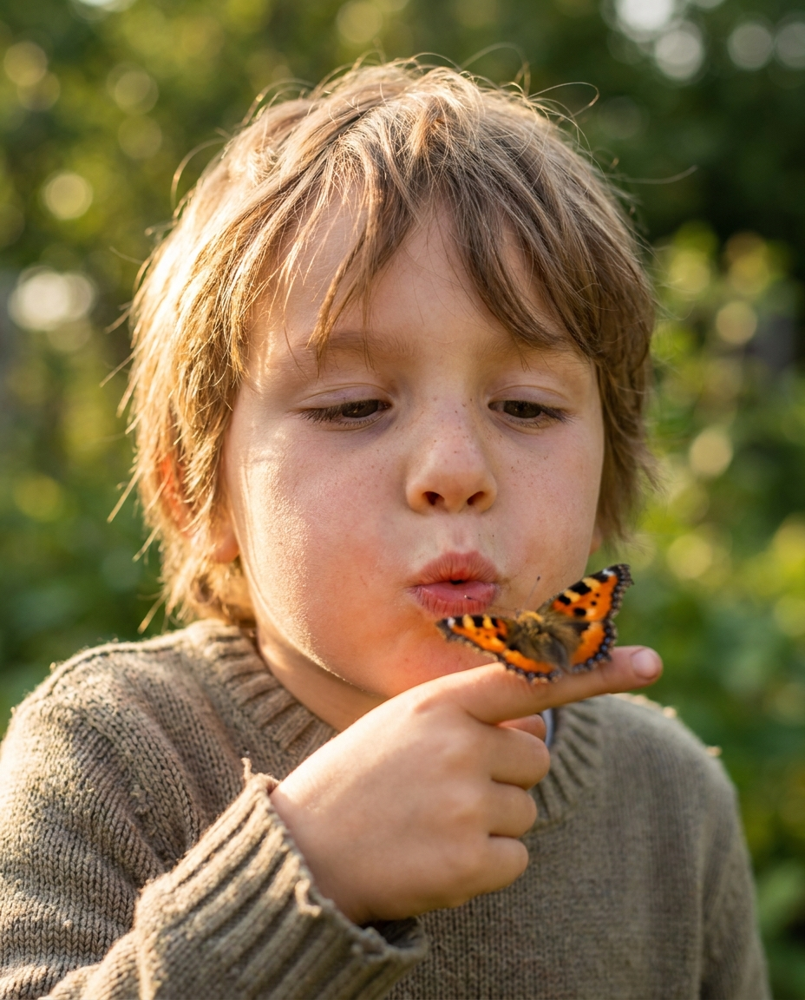
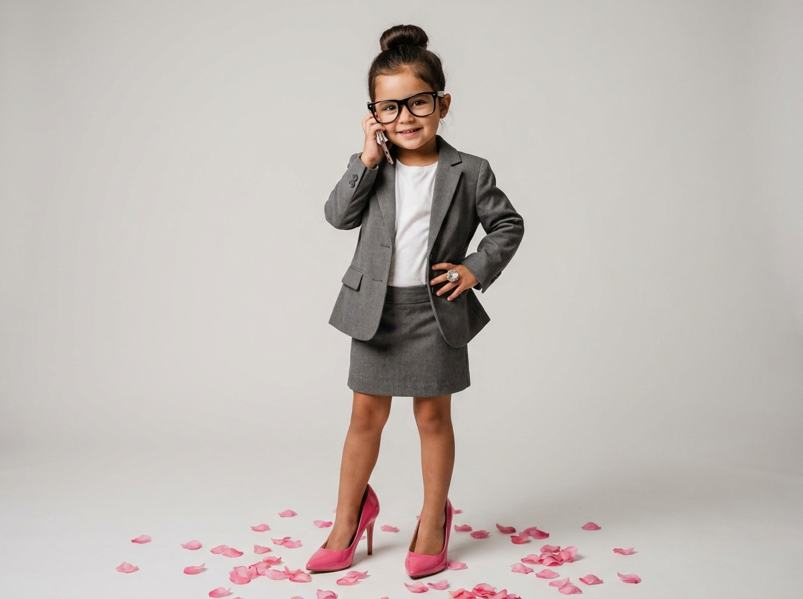
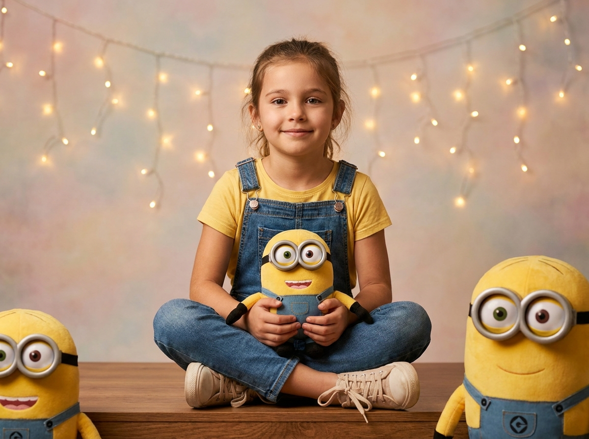
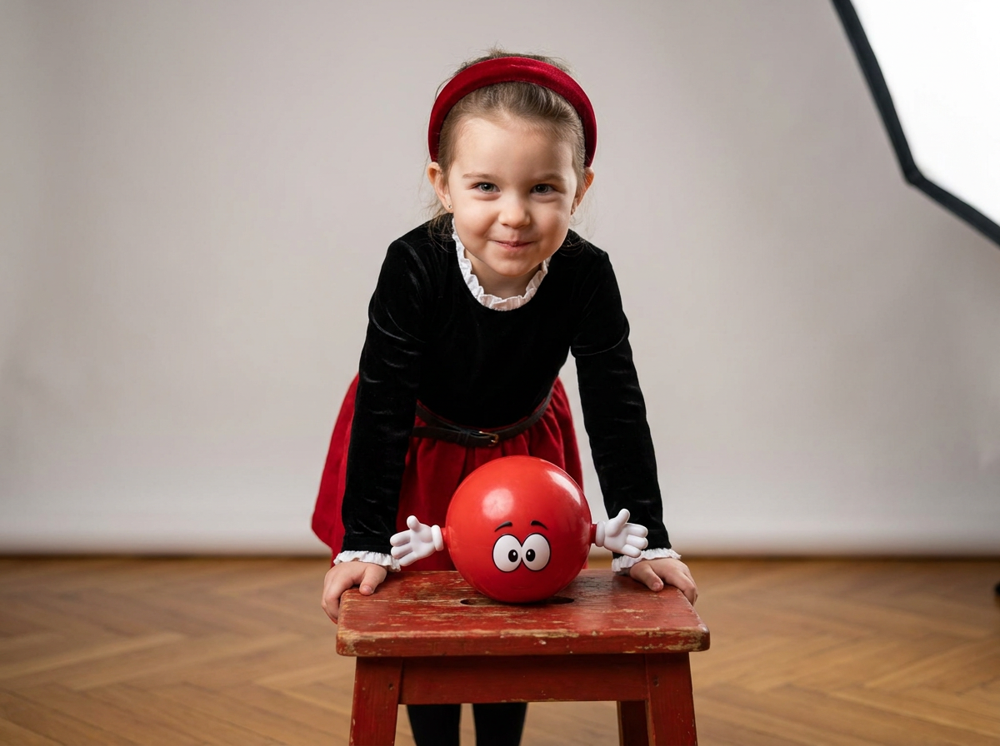
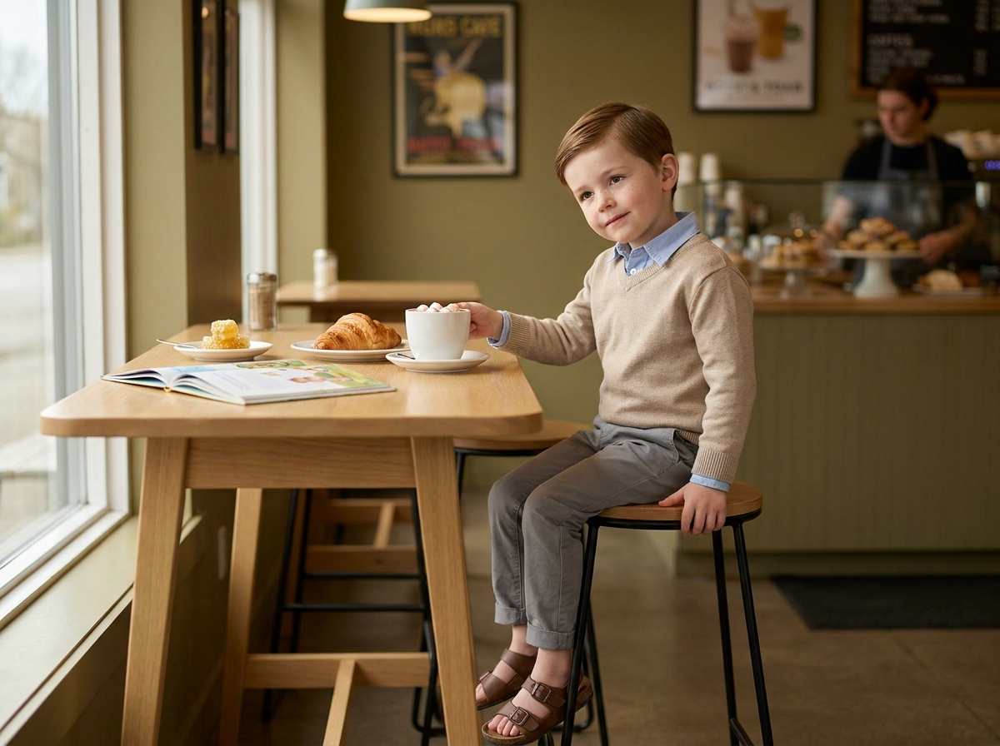
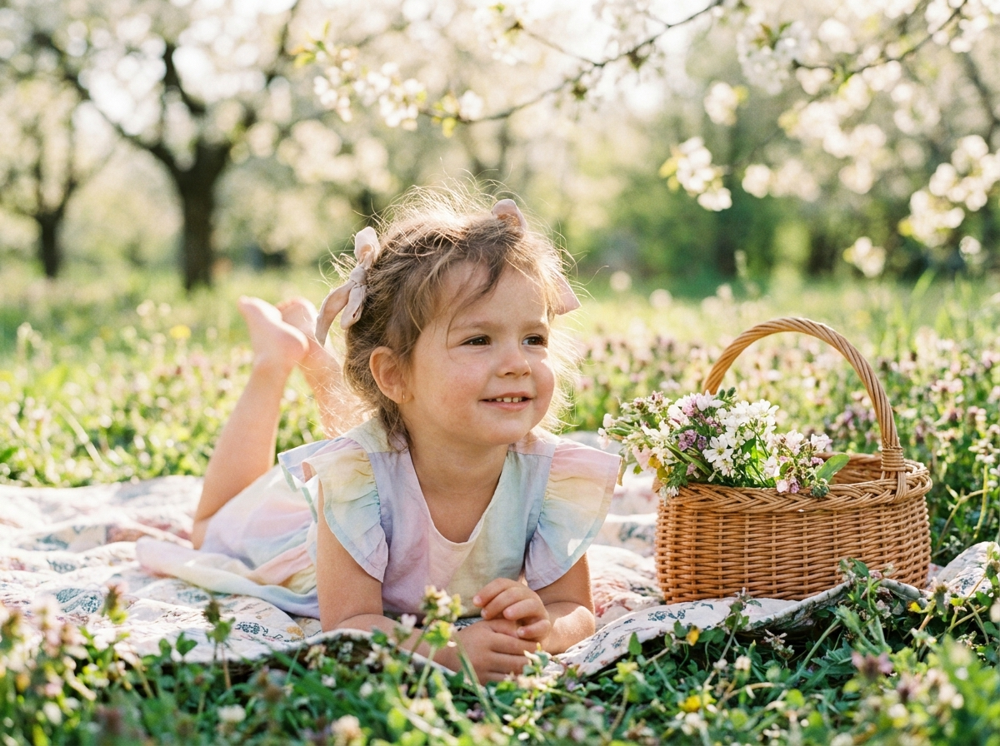
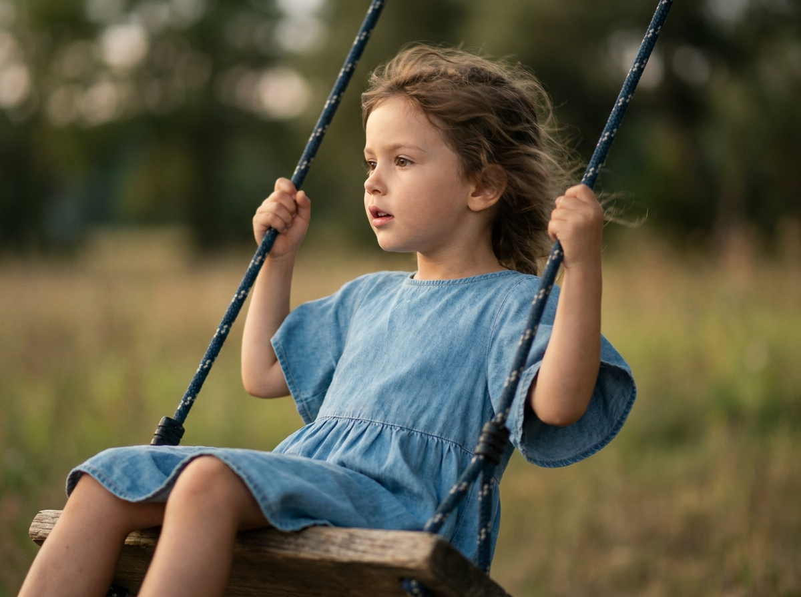
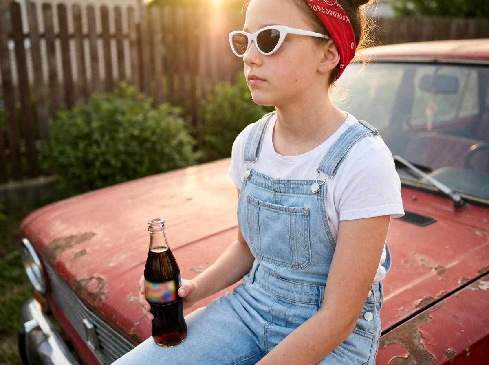
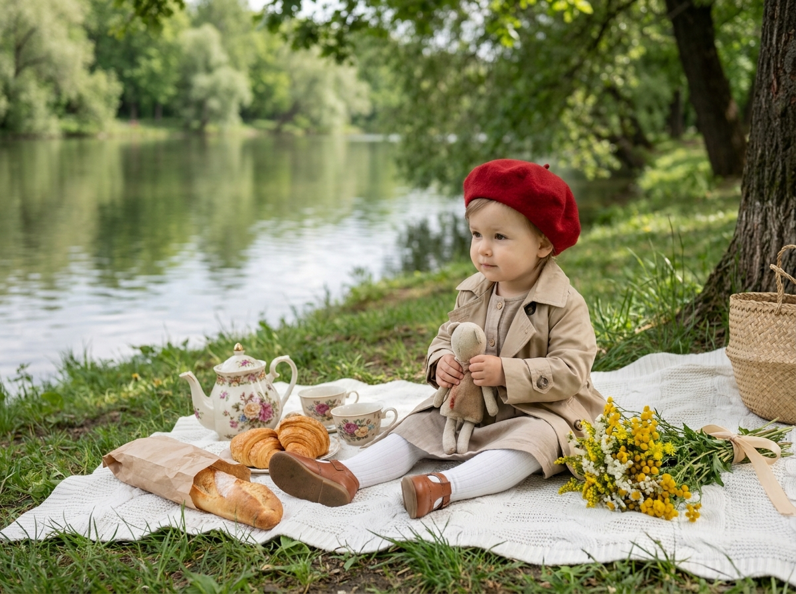
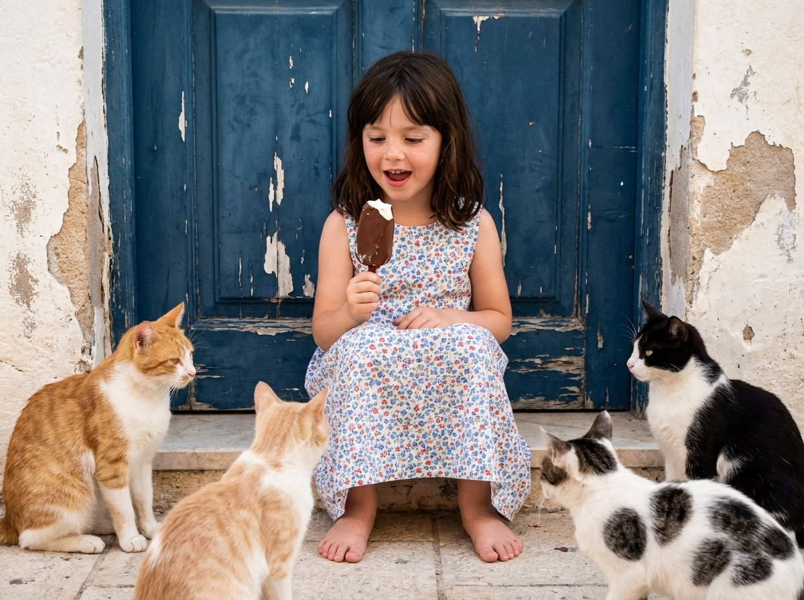

Детская ИИ-фотосессия: 10 промптов для нейросети

Не всегда получается устроить ребёнку красивую фотосессию: мешают погода, нехватка времени, дорогая студия или нежелание позировать. Генерация изображений помогает собрать нужный кадр из описания - с подходящим светом, одеждой, настроением и фоном.
Внутри - 10 сценариев для детской ИИ-фотосессии: от тёплого портрета с бабочкой и весеннего пикника до ретро-автомобиля, кафе, качелей и нарядной съёмки в студии. Промпты можно использовать как основу и адаптировать под возраст ребёнка, референс и формат кадра.
Как сгенерировать такое фото: пошагово
Нужен снимок анфас при ровном свете, лицо в кадре целиком, без тёмных очков и головных уборов. Разрешение от 1000 пикселей по короткой стороне. Чем чётче исходник, тем точнее модель повторит черты.
Выберите сценарий ниже и нажмите «Копировать» - текст уйдёт в буфер целиком, вместе с командой сохранения внешности. Эта команда стоит первой строкой и отвечает за то, чтобы на выходе было ваше лицо, а не случайное.
Кнопка «Сгенерировать» рядом с каждым промптом открывает модель в новой вкладке. Nano Banana Pro работает с референсом лица - в отличие от моделей, которые генерируют портрет с нуля и узнаваемость теряют.
Промпт - в поле ввода, портрет - через загрузку референса. Порядок значения не имеет, но без референса команда сохранения внешности работать не будет: модели нечего сохранять.
Для сторис и ленты берите 9:16, для превью и обложек - 4:3. Первый результат редко идеален: если поза или свет ушли не туда, поправьте соответствующую часть промпта и запустите заново. Обычно хватает двух-трёх итераций.
10 промптов для генерации
1. Портрет с бабочкой
Строго сохранить внешность по загруженному референсу: черты лица, пропорции, мимику и текстуру кожи без изменений. Ультрареалистичный тёплый портрет ребёнка на открытом воздухе, эстетика семейной lifestyle-фотографии и candid-документальной съёмки. Маленький ребёнок подносит палец к лицу: на кончике пальца сидит пёстрая бабочка, а ребёнок вытягивает губы трубочкой, будто осторожно дует на неё. В глазах любопытство, невинность и игровое удивление. Снять крупным планом лицо и руку, использовать малую глубину резкости; зелёный сад позади превратить в мягкое мечтательное боке. Крылья бабочки ярко-оранжевые, с чёрным узором, прорисованы предельно чётко. Мягкий золотистый дневной свет подсвечивает лицо, кожу и тонкие пряди волос, создаёт естественные солнечные блики. Тёплая деликатная цветокоррекция, натуральная текстура кожи, спонтанное ощущение настоящего семейного кадра.
2. Маленькая бизнес-леди

Строго сохранить внешность по загруженному референсу: черты лица, пропорции, мимику и текстуру кожи без изменений. Фотореалистичный полноразмерный портрет маленькой девочки в игривом образе взрослой деловой героини. На ней серый жакет, юбка, белая футболка, волосы собраны в аккуратный пучок, на лице крупные чёрные очки. Девочка улыбается и держит смартфон у уха, вторую руку кладёт на бедро; на пальце заметно большое декоративное кольцо. Обувь нарочито велика: ярко-розовые лаковые туфли на высоком каблуке. На светло-сером фоне рассыпаны розовые лепестки. Мягкий студийный свет, низкая глубина резкости, резкость точно на глазах, тёплые естественные оттенки и мягкий контраст. Передать натуральную фактуру кожи и лёгкое комическое настроение. Вертикальный кадр, объектив 50 мм, диафрагма f/2.8, высокое разрешение.
3. Миньоны и жёлтый комбинезон

Строго сохранить внешность по загруженному референсу: черты лица, пропорции, мимику и текстуру кожи без изменений. Реалистичная детская студийная фотография: девочка сидит на полу или низкой сцене, в кадре видны корпус и колени. Она слегка развёрнута в профиль, но смотрит прямо в объектив; выражение лица мягкое, доброжелательное, спокойное и радостное. Лицо, форма глаз, бровей, носа, губ, овал, мимика и детские пропорции должны выглядеть естественно, без изменения индивидуальной внешности по референсу. На девочке жёлтая футболка и джинсовый комбинезон или полукомбинезон без откровенности; видны ремешки на плечах, ткань имеет реалистичную фактуру и аккуратные швы. На ногах светлые кремовые кеды со шнуровкой. Одной рукой девочка поддерживает игрушку, другой слегка опирается. Слева и справа рядом находятся игрушки-миньоны: один лежит или поддерживается рядом с ребёнком. Мягкий студийный свет, натуральные цвета, чёткие детали.
4. Красный табурет

Строго сохранить внешность по загруженному референсу: черты лица, пропорции, мимику и текстуру кожи без изменений. Вертикальный фотореалистичный студийный портрет девочки в динамичной позе. Девочка стоит или наклоняется к камере, опираясь обеими руками на небольшой красный деревянный табурет. Корпус немного повёрнут вправо, голова наклонена, лицо расположено близко к объективу. Взгляд направлен прямо в камеру; настроение озорное и игривое, губы слегка приоткрыты, возможна едва заметная улыбка. На голове ярко-красная бархатная повязка или лента. Наряд сценический, карнавальный: чёрный топ или кофта с рукавами из мягкой ткани, спереди контрастная белая деталь - воротник, манжеты или фартучек с лёгкой оборкой и рюшами. Сохранить естественные детские пропорции, индивидуальные черты лица и живую мимику по референсу. Мягкий студийный свет, реалистичная фактура дерева и ткани, выразительная резкость на лице, вертикальная композиция.
5. Малыш в матча-кафе

Строго сохранить внешность по загруженному референсу: черты лица, пропорции, мимику и текстуру кожи без изменений. Ультрареалистичная редакционная фотография в вертикальном формате 9:16: мальчик четырёх-пяти лет сидит за светлым деревянным столиком в современном минималистичном кафе. Стены окрашены в приглушённый оливково-зелёный оттенок матча, на них висят постеры в тонких рамках - абстрактная работа и чёрно-белая фотография. Слева находится окно, откуда падает мягкий рассеянный дневной свет. Ребёнок сидит на высоком стуле с деревянным сиденьем и чёрными металлическими ножками. Обе руки лежат на столе, пальцы легко касаются края керамической кружки. Голова чуть наклонена вправо, взгляд уходит в сторону от камеры, на лице задумчивость и лёгкая полуулыбка. Одежда casual smart: светло-голубая хлопковая рубашка с длинными рукавами и маленькими пуговицами на манжетах, сверху тонкий бежевый джемпер без рисунка с V-образным вырезом, серые брюки чинос до щиколоток, кожаные детали образа. Низкая глубина резкости, натуральные цвета.
6. Весенний сад и пикник

Строго сохранить внешность по загруженному референсу: черты лица, пропорции, мимику и текстуру кожи без изменений. Мягкий лайфстайл-портрет детства в цветущем весеннем саду. Ребёнок лежит на пикниковом пледе среди зелёного луга, усыпанного нежными полевыми цветами; рядом стоит плетёная корзина, наполненная цветами. Камера расположена немного выше уровня глаз, кадр крупный, лицо и фигура окружены цветами. Ребёнок опирается на локти, смотрит чуть в сторону от объектива, выглядит расслабленно и радостно. На нём пастельное платье с воланами на рукавах, в волосах мягкие ленты. Позади видны ветви деревьев и листва, растворяющиеся в кремовом боке. Свет тёплый, естественный, солнечные лучи проходят сквозь листья и мягко моделируют лицо, подчёркивая розовые щёки. Семейная редакционная фотография, малая глубина резкости, мечтательная атмосфера, натуральная текстура кожи и ткани, спокойная цветовая палитра.
7. Девочка на качелях

Строго сохранить внешность по загруженному референсу: черты лица, пропорции, мимику и текстуру кожи без изменений. Фотореалистичная детская фотография в вертикальной ориентации: девочка сидит на деревянной верёвочной или плетёной качели. Показать её в три четверти профиля, голова повернута влево, взгляд направлен вдаль, выражение лица спокойное и задумчивое, губы слегка приоткрыты. Волосы немного растрёпаны движением, из причёски выбились отдельные локоны. На девочке светло-голубое джинсовое платье свободного силуэта с рукавами-крылышками; мягкий деним естественно струится и образует складки. Сиденье сделано из грубой деревянной доски, хорошо видна текстура древесины. В кадре проходят две толстые тёмно-синие верёвки с белыми вкраплениями или полосами, крепления заметны и выглядят правдоподобно. Сохранить детские пропорции, индивидуальные черты лица, форму глаз, бровей, носа и губ по референсу. Натуральный свет, живая фактура волос, ткани и дерева, ощущение лёгкого движения.
8. Ретро-автомобиль и бандана

Строго сохранить внешность по загруженному референсу: черты лица, пропорции, мимику и текстуру кожи без изменений. Фотореалистичная уличная детская съёмка в стиле candid street photo, вертикальный кадр. Девочка сидит на капоте старого красного автомобиля и занимает центральную часть композиции. Показать фигуру от пояса или груди с ногами в кадре. Поза полубоком: колени согнуты, одна нога свисает ближе к переднему краю капота, спина расслаблена, корпус немного развёрнут вправо. Выражение спокойное, уверенное и слегка серьёзное; взгляд направлен мимо камеры или на напиток. На голове красная ретро-бандана или повязка, на лице белые солнцезащитные очки с тёмными линзами и выразительной оправой, без логотипов и надписей. Кожа и черты лица должны оставаться детскими, с естественной текстурой и пропорциями, индивидуальность сохранить по референсу. Передать фактуру старого автомобиля, мягкий уличный свет, натуральные тени и случайность настоящего репортажного кадра.
9. Пикник у тихого озера

Строго сохранить внешность по загруженному референсу: черты лица, пропорции, мимику и текстуру кожи без изменений. Ультрадетализированная лайфстайл-фотография стильного малыша на пикнике у спокойного озера под большим деревом. Ребёнок сидит на белом пледе, смотрит в сторону и прижимает к себе маленькую мягкую игрушку. На нём песочное пальто-тренч поверх мягкого платья нейтрального оттенка, белые колготки и коричневые кожаные туфли. Красный классический берет добавляет образу парижское настроение. Рядом с пледом лежит ствол дерева, на заднем плане тихая вода отражает зелень парка. В композиции видны винтажные цветочный чайник и чашки, круассаны, деревенский батон в бумажной упаковке, букет жёлтых цветов с лентой и соломенная сумка. Использовать слегка приподнятый угол съёмки, чтобы показать весь пикник, оставив ребёнка главным центром. Мягкий дневной свет проходит сквозь листву и создаёт нежные тени, цвета естественные, детали ткани, посуды и травы чёткие.
10. Мороженое у синей двери

Строго сохранить внешность по загруженному референсу: черты лица, пропорции, мимику и текстуру кожи без изменений. Фотореалистичная детская уличная сцена в вертикальном формате. Девочка стоит босиком на светлом каменном или цементном полу у старой стены, в центре кадра. Позади - ярко-синяя дверь или панель с отслоившейся белой краской: заметны оголённые участки штукатурки, неровные сколы, трещины и выразительная фактура старого покрытия. Поза естественная, слегка присевшая: ноги устойчиво расставлены, корпус немного наклонён вперёд. В руке девочка держит деревянное эскимо или леденец на палочке, шоколадно-коричневый, с белой кремовой крошкой или подтеками; часть растаявшего десерта видна на палочке и возле губ. Рот приоткрыт, выражение радостное и удивлённое, будто ребёнок только пробует мороженое. Сохранить детские пропорции и индивидуальные черты лица по референсу, натуральную кожу и мимику. Мягкий дневной свет, реалистичная фактура стены, десерта и пола, живой уличный кадр без текста и логотипов.
Что важно учесть в этом стиле
Детская фотосессия лучше выглядит, когда в промпте есть не только одежда и фон, но и конкретное действие: ребёнок дует на бабочку, касается кружки, держит игрушку или пробует мороженое. Такое описание помогает получить живую мимику вместо статичной улыбки.
Для реалистичного результата задавайте источник света, положение камеры, глубину резкости и фактуры объектов. Уточнения вроде «естественные детские пропорции», «без логотипов» и «натуральная текстура кожи» уменьшают число случайных деталей. Если используется референс, лучше отдельно описать, какие черты нельзя менять.
Идеи для вариаций
- Замените бабочку на божью коровку, одуванчик или мыльные пузыри.
- Перенесите пикник из сада на пляж, в яблоневый сад или на лесную поляну.
- Поменяйте палитру одежды: жёлто-джинсовую на зелёно-бежевую, голубую или терракотовую.
- Добавьте дождевые сапоги, бумажный самолёт, воздушного змея или старый чемодан.
- Сделайте серию в разных планах: крупный портрет, по пояс и полный рост.
- Для праздничного кадра добавьте гирлянду, торт с одной свечой или разноцветные флажки.
Как собрать свой промпт
Сначала назовите формат и героя: возраст, пол, крупность плана и положение в кадре. Затем опишите действие и эмоцию, после этого - одежду, аксессуары, локацию и предметы вокруг. Не смешивайте несовместимые условия: студийный свет, например, лучше отделять от описания солнечного сада.
В финале добавьте визуальные настройки: вертикальный формат, объектив 50 мм, f/2.8, малую глубину резкости, мягкий контраст или высокое разрешение. Для референса используйте формулировку о сохранении индивидуальных черт, но не начинайте с неё: сначала нейросеть должна понять сцену, позу и настроение.
Ошибки, из-за которых кадр не получается
- Слишком много действий. Если ребёнок одновременно бежит, держит чашку, смотрит назад и улыбается, поза часто ломается. Оставьте одно главное действие.
- Неуточнённый ракурс. Слова «красивый портрет» не объясняют, нужен ли крупный план или полный рост. Укажите положение камеры и границы кадра.
- Случайные взрослые детали. Каблуки, макияж, украшения и сложные костюмы могут сделать лицо старше. Добавляйте их как часть стилизации и отдельно просите сохранить детские черты.
- Отсутствие ограничений. Без указаний «без текста, логотипов и лишних пальцев» в сцене появляются надписи и артефакты.
- Неподходящий свет. Жёсткое полуденное солнце конфликтует с мечтательным портретом. Для мягкой атмосферы задавайте рассеянный свет, тени от листвы или студийный софтбокс.
Частые вопросы
Как сделать такое ИИ-фото бесплатно?
Попробуйте Kandinsky или Шедеврум: они подходят для генерации по тексту, но точность лица и работа с детским референсом могут быть нестабильными. Krea AI и Arena.ai удобны для тестов и сравнения результатов, однако доступные режимы, лимиты и качество загрузки референса меняются. Бесплатный вариант не гарантирует сохранение внешности с первой попытки: обычно нужно несколько генераций и аккуратное описание сцены.
Как сохранить лицо ребёнка по фотографии?
Загрузите чёткий референс без сильных фильтров, где лицо хорошо освещено, и отдельно попросите сохранить форму глаз, носа, губ, овал и естественную мимику. Не меняйте одновременно возраст, причёску, ракурс и выражение лица - это снижает сходство.
Какой формат выбрать для детской фотосессии?
Для сторис и вертикальных публикаций подойдёт 9:16, для портрета - 4:5 или 3:4, для печати лучше заранее задать высокое разрешение. Если в сцене много реквизита, выбирайте более широкий формат, чтобы края композиции не обрезались.
Почему нейросеть искажает руки и обувь?
Сложные позы, пальцы на кружке, ремешки, шнурки и обувь крупного размера часто становятся проблемными зонами. Упростите положение рук, опишите каждую конечность отдельно и перегенерируйте кадр. Исправление отдельных участков встроенным редактором обычно работает лучше, чем полностью новый длинный промпт.